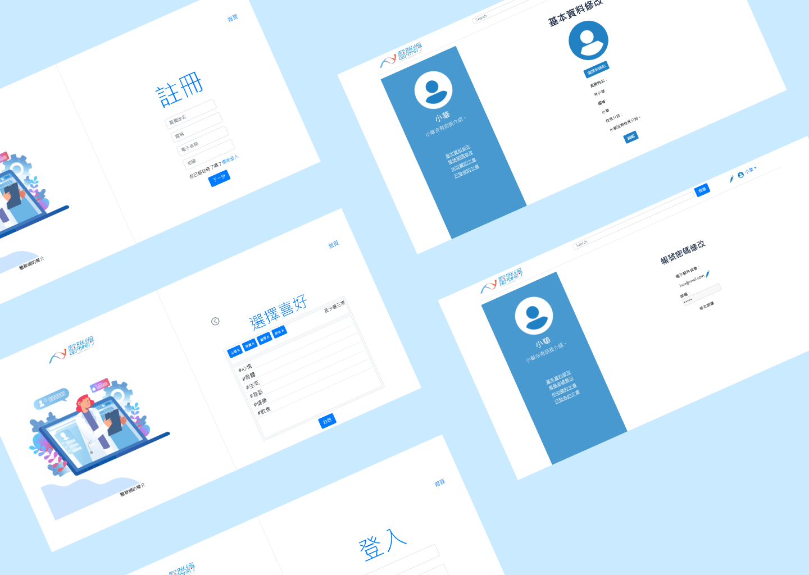

身分
使用者體驗、網頁後端
工具
PHP, MySQL, XAMPP, Miro
背景描述
在眾匯智能公司和同學們一起實習的期間，公司給我們三人的任務是”以吸引重視健康的人們為目標，開發一個醫療論壇”。
專案開發流程
競品分析
我們分析了一些論壇、社群平台與健康資訊文章網站，觀察它們的優勢、架構與內容。
人物誌
我們歸納出一些常見話題，並利用雛型人物誌列出幾種使用者的行為、需求與目標。
功能圖
我們利用功能圖來列出論壇的功能與使用者。
功能可分為四個種類，帳號、文章、留言、追蹤；使用者有兩種，訪客和會員。
訪客只能閱讀文章和留言，訪客註冊帳號並登入後才可以使用所有的功能。
之後，我為需要儲存的資料繪製實體關係模型圖。

介面流程圖、功能流程圖
我們在製作這兩個流程圖的時候，有將其中的頁面分成三種，分別是登入前就能看到的頁面、登入後添加功能的頁面、登入後才能看到的頁面。
線框圖、視覺稿
兩位同學先在紙上打草稿，經過一番討論後，再製作數位檔案。
開發
兩位同學負責前端，我負責後端。我的後端任務是實作以下功能：
- 頁面：將可重複使用的網頁區塊分割成獨立的檔案再使用
- 帳號：註冊帳號並為密碼加鹽，檢視、修改帳號資料
- 文章：新增、檢視、編輯、刪除、收藏文章
- 留言：新增留言
- 追蹤：追蹤其他會員